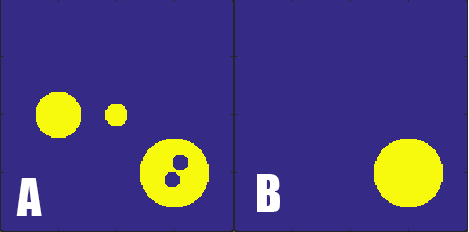

| EPR Imaging Toolbox collection user manual |
outside_mask3
Syntax: outmask=outside_mask3(image) outmask=outside_mask3(image,threshold) Description: Finds outside mask of the largest object. Internal holes of the object are filled.  image - (matrix, 2D or 3D) threshold - a value that separates noise and objects (float, 0.1 by default) outmask - largest component (boolean, the same dimension as image) Example: bkg = zeros(200,200); [X,Y] = meshgrid(1:200,1:200); bkg((X-100).^2 + (Y-100).^2 < 10^2) = 1; bkg((X-150).^2 + (Y-150).^2 < 30^2) = 1; bkg((X-148).^2 + (Y-156).^2 < 7^2) = 0; bkg((X-155).^2 + (Y-141).^2 < 7^2) = 0; bkg((X-50).^2 + (Y-100).^2 < 20^2) = 1; figure; subplot(1,2,1); imagesc(bkg, [0,1]); axis image % Find the largest component component = outside_mask3(bkg, 0.5); subplot(1,2,2); imagesc(component, [0,1]); axis image Legend: EPR-IT functions; MATLAB functions; comments. |